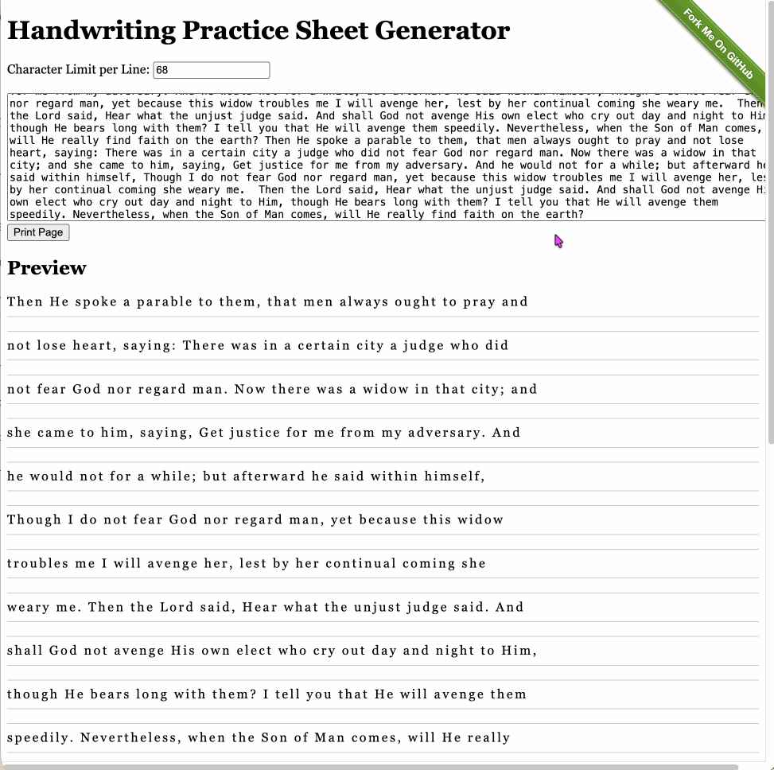

×
Printing tip
Browsers don’t give full control over where page breaks occur when
printing. Because of this, a line of text and its corresponding
practice space (the blank area with guiding lines) may sometimes be
split across two pages — which is not ideal for handwriting exercises.
To work around this, you can manually adjust the zoom level in the
print dialog (e.g., Chrome’s print preview). Changing the zoom
slightly can shift the content so that each text line stays together
with its practice space on the same page.
The GIF below demonstrates how to adjust the zoom and find a setting
that keeps the text and its corresponding practice line together.
